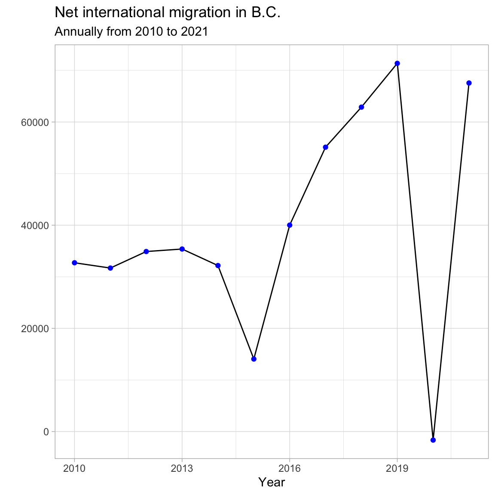
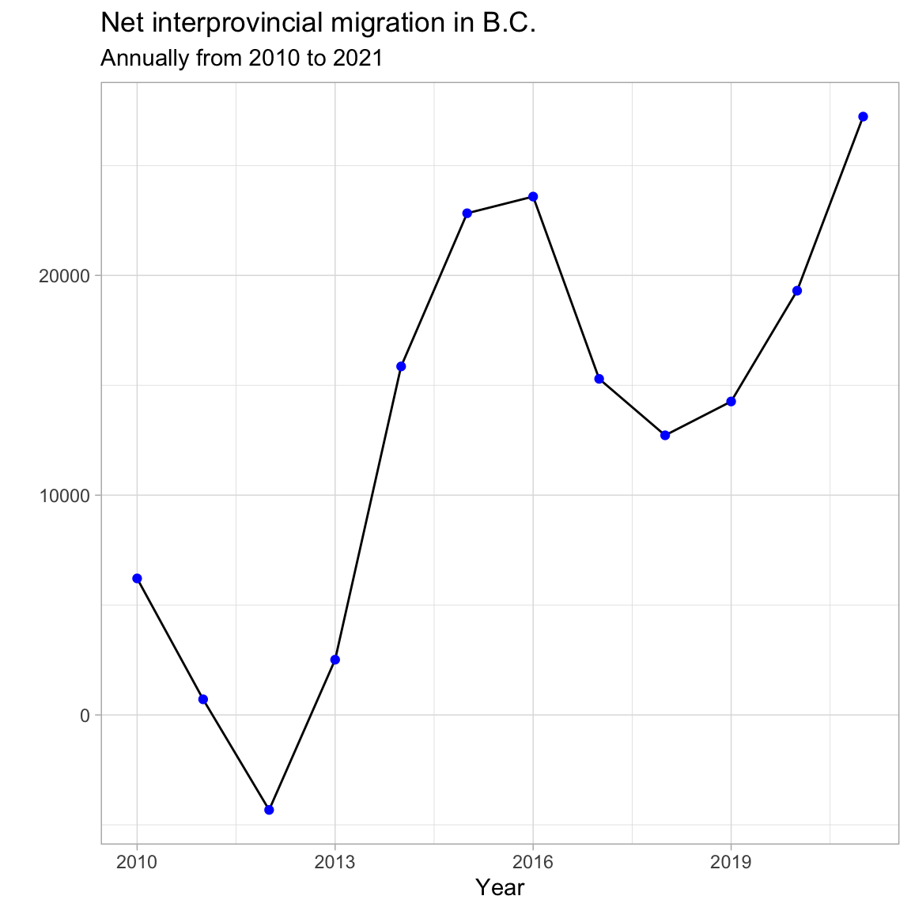
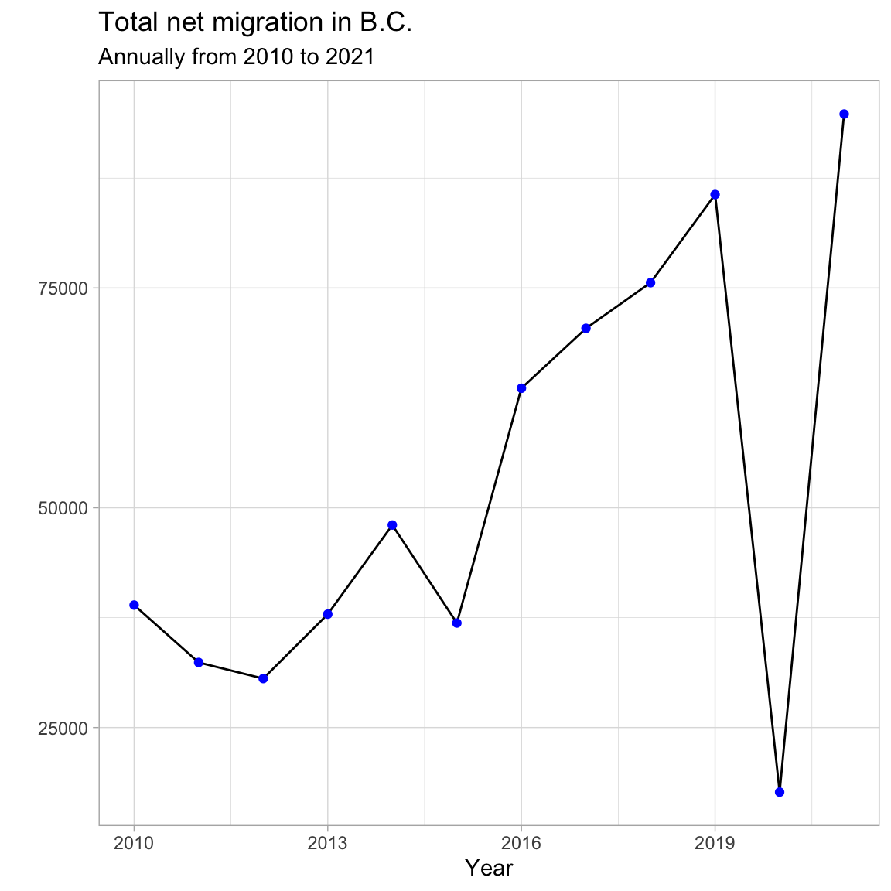

BC Migration Patterns
Now it is your turn to take all of the tools you have learned over the course and put them into practice. Below are some prompts and tips to guide you through a short analysis on international and inter-provincial migration in B.C. Try to come up with your own solutions before looking at the hints and possible solutions provided.
The migration data is publicly available in the BC Data Catalogue but we have also provided it in csv format in the data folder.
13.3 Setting up your R session
As discussed in Chapter 1: Introduction to R and RStudio, before starting any analysis in R, make sure you have the necessary packages installed and loaded. For this work you will need to make use of the readr, dplyr, tidyr and ggplot2 packages. There will also be an opportunity to use the bcdata package to explore the BC Data Catalogue.
Installing packages if necessary
install.packages("readr") install.packages("dplyr") install.packages("tidyr") install.packages("ggplot2") install.packages("bcdata")
13.4 Loading data
Next load the data that you will be working with. For this analysis you will be working with international and inter-provincial migration data. This data has been provided for you in the data folder, but it is also available from the BC Data Catalogue. For added practice consider using the bcdata package to import the data.
For a refresher on reading data from a csv file, check out Chapter 4: Data Structures
Hint 1
Use the read_csv function
Hint 2
Review the help pages if needed
?read_csv
For an added challenge, consider importing the data directly from the BC Data Catalogue as discussed in Chapter 10: Introduction to the bcdata package
Hint 1
Use the bcdc_search function to search the data catalogue for records relating to migration
bcdc_search("migration")
Hint 2
The first title from the resulting search Inter-provincial and International migration (csv) sounds correct. Use the record ID to find the IDs for the desired data sets (or resources).
migration_resources <- bcdc_tidy_resources('56610cfc-02ba-41a7-92ef-d9609ef507f1') migration_resources %>% select(name, id)# A tibble: 6 × 2 name id <chr> <chr> 1 interprovincial_migration 95579825-bfa2-4cab-90fa-196e0ecc8626 2 international_migration c99d63f6-5ec4-4ac0-9c07-c0352f2f1928 3 international_migration_annual a8c186bb-857c-4138-8605-103c05411563 4 interprovincial_migration_annual f6171cc3-3845-40dd-9855-d87e8f524064 5 interprovincial_migration_census_year 827c7f61-39bc-403f-8cf0-51fca5daef32 6 international_migration_census_year 773cc273-4456-4441-b040-ab0d03c7d5e9
Possible Solution
Import the first two resources, interprovincial_migration and international_migration.
international <- bcdc_get_data(record = "56610cfc-02ba-41a7-92ef-d9609ef507f1", resource = "c99d63f6-5ec4-4ac0-9c07-c0352f2f1928") interprovincial <- bcdc_get_data(record = "56610cfc-02ba-41a7-92ef-d9609ef507f1", resource = "95579825-bfa2-4cab-90fa-196e0ecc8626")
13.5 Reviewing the data
When working with new data, it is best practices to take some time to review and understand it. Use the functions you learned in Chapter 5: Manipulating Data Frames with dplyr to find the size and various other attributes of the data.
Hint 1
- What are the columns in the international migration data, how are they related?
- What are the columns in the inter-provincial migration data, how are they related?
- How does the structure of the inter-provincial data differ from the international data?
- What is the frequency of the data (Annual, Quarterly, Monthly, etc.)?
- Is there anything else worth noting?
Possible Solution
International migration data:
- The international migration data has 204 rows and 8 columns.
- The data is recorded quarterly from 1971 to 2022.
- The column names are Year, Quarter, Immigrants, Emigrants, Net_non_permanent_residents, Net_temporary_emigrants, Returning_emigrants, Net_migration.
- The column Net_migration can be calculated from the other columns as:
Net_migration = Immigrants - Emigrants + Net_non_permanent_residents - Net_temporary_emigrants + Returning_emigrants- This dataframe only contains values for B.C.
Inter-provincial migration data:
- The inter-provincial migration data has 2,572 rows and 17 observations.
- The data is also recorded quarterly from 1971 to 2022.
- The column names are Year, Quarter, Origin, Acronyms of the 10 provinces and 3 territories, Total.
- This data is set up in a crosstab structure where, for example, a value in a row with Origin = “B.C.” in the column “N.L.” represents the number of people that migrated from B.C. to N.L. in that year and quarter.
- The Total column is equal to the sum of all of the provincial/territorial columns and represents the total number of people that migrated “OUT” of the province/territory listed in the Origin column for that year and quarter.
- This dataframe contains all of the inter-provincial migration across Canada.
13.6 Analyzing your data
Now that you are familiar with your data, it is time to do some analysis. There is many different directions you can take but for this example we are going to look at the annual net migration of B.C. since 2010 to see if there are any interesting patterns. Let’s break this down into three parts: net international migration, net inter-provincial migration and total net migration.
13.6.1 Net international migration from 2010 to 2021 annually
Plot the net international migration that occurred in B.C. from 2010 to 2021 annually.
Where do you start? Is this data available already, or does the data need to be manipulated? Use the tools you learned from Chapter 5: Manipulating Data Frames with dplyr and then make an attractive plot using the tools from Chapter 6: Creating Publication-Quality Graphics with ggplot2. Make sure to add labels and play around with theme elements to get your desired look.
Hint (part 1)
You will need to manipulate the data before plotting. Consider the which years are to be plotted and the frequency. Consider what column/columns contain the most relevant data.
Possible Solution (part 1)
Filter the data for the correct years to be included (greater than or equal to 2010 but less than 2022). To get the annual amount, group by year and sum Net_migration.
Hint (part 2)
Start with a basic plot. What is the mapping? What geom would work best?
ggplot(data = plot_data_net_international, mapping = aes(x = ??, y = ??)) + geom_??
Possible Solution (part 2)
Here is a possible plot. Try to make your plot even more polished/customized.
ggplot(plot_data_net_international, aes(x = Year, y = Net_international)) + geom_line() + geom_point(color = "blue") + labs(title = "Net international migration in B.C.", subtitle = "Annually from 2010 to 2021", y = "") + theme_light() + theme()
13.6.2 Net inter-provincial migration from 2010 to 2021 annually
Did you discover any interesting trends in international migration? Do you think similar trends occurred among inter-provincial migration?
Plot the net inter-provincial migration that occurred in B.C. from 2010 to 2021 annually.
How does your approach differ using the inter-provincial data compared to the international data? It may be helpful to consider the tools you learned in Chapter 8: Joining Related Data.
Hint 1
Net inter-provincial migration is not provided in the inter-provincial data so you will need to calculate it. Consider how you would manipulate the data to get the total “IN” migration to B.C., then consider how you would get the total “OUT” migration from B.C.
Hint 2
The column B.C. in the data represents all of the migration “IN” to B.C. The Total column represents the total amount of “OUT” for the province/territory listed in the Origin column.
Possible Solution
Calculate the annual “IN” migration with the following:
in_prov <- interprovincial %>% filter(Year >= 2010, Year < 2022) %>% group_by(Year) %>% summarize(In_provincial = sum(B.C.))Calculate the annual “OUT” migration with the following:
out_prov <- interprovincial %>% filter(Year >= 2010, Year < 2022) %>% filter(Origin == "B.C.") %>% group_by(Year) %>% summarize(Out_provincial = sum(Total))Join the two dataframes to calculate the “NET” migration.
plot_data_net_interprovincial <- in_prov %>% left_join(out_prov, by = c("Year")) %>% mutate(Net_provincial = In_provincial - Out_provincial)Create a plot.
ggplot(plot_data_net_interprovincial, aes(x = Year, y = Net_provincial)) + geom_line() + geom_point(color = "blue") + labs(title = "Net interprovincial migration in B.C.", subtitle = "Annually from 2010 to 2021", y = "") + theme_light() + theme()
13.6.3 Total net migration from 2010 to 2021 annually
How did the inter-provincial migration differ from the international migration? What about total net migration?
Plot the total net migration that occurred in B.C. from 2010 to 2021 annually.
What dataframes can you combine to calculate the total net migration? Check out Chapter 8: Joining Related Data, for a refresher on joining data.
Possible Solution
Combine the two plot_data dataframes that you created in the previous steps. Join by year. Then, calculate the total net migration by summing the international and inter-provincial.
plot_data_total_net_migration <- plot_data_net_international %>% left_join(plot_data_net_interprovincial, by = c("Year")) %>% mutate(Net_migration = Net_international + Net_provincial)Create a plot.
ggplot(plot_data_total_net_migration, aes(x = Year, y = Net_migration)) + geom_line() + geom_point(color = "blue") + labs(title = "Total net migration in B.C.", subtitle = "Annually from 2010 to 2021", y = "") + theme_light() + theme()